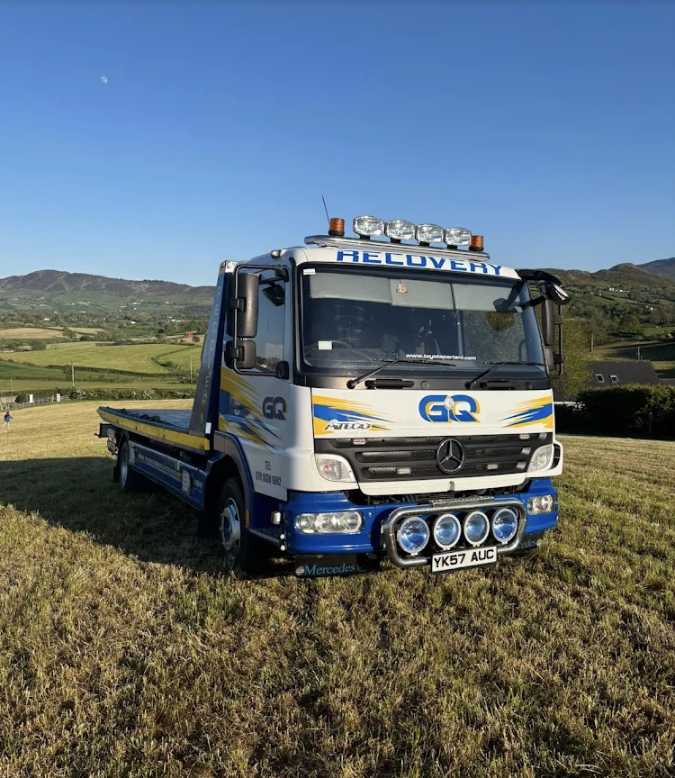
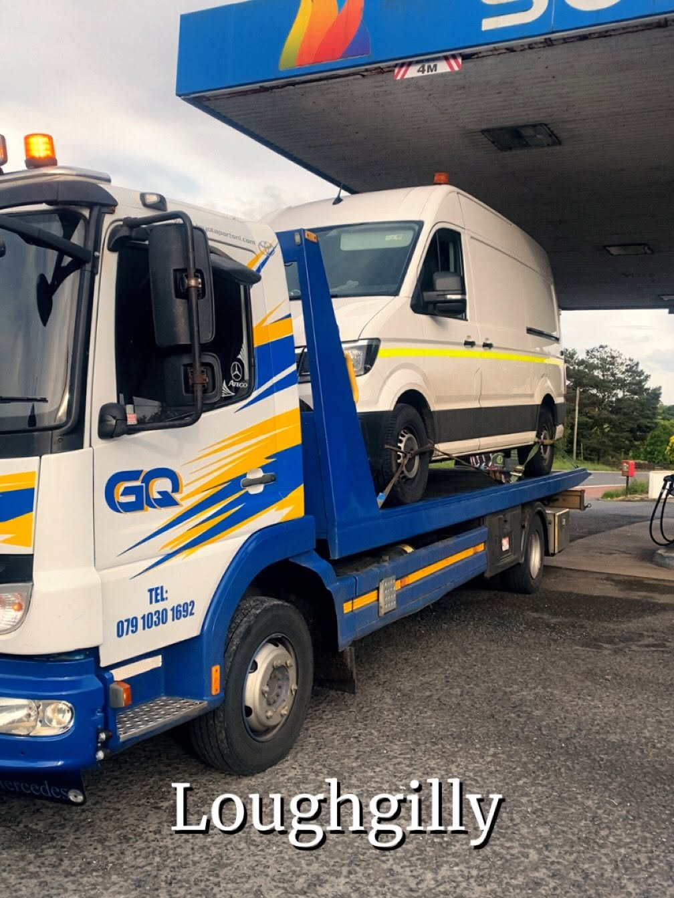
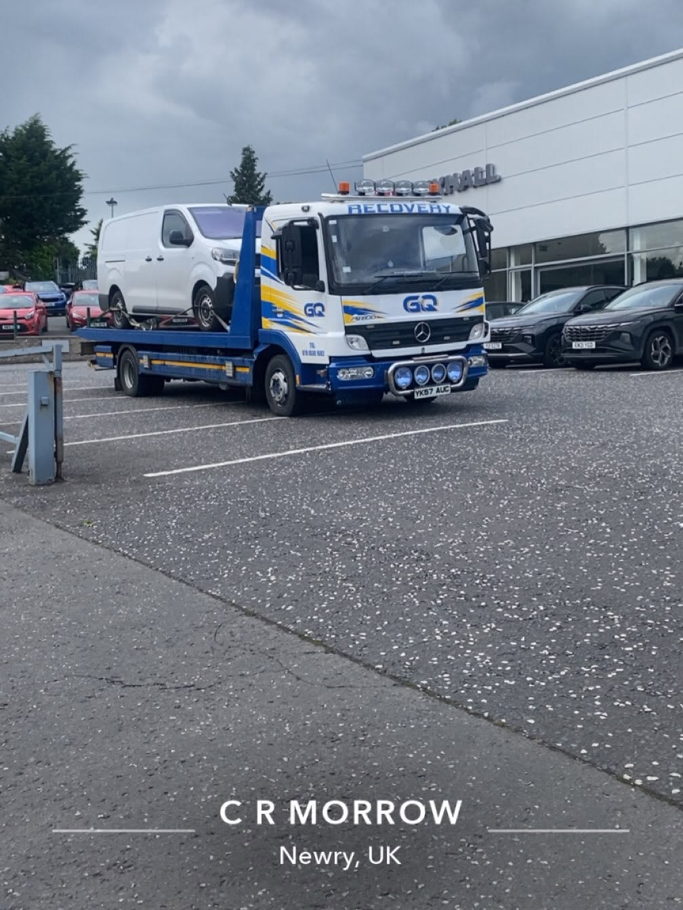
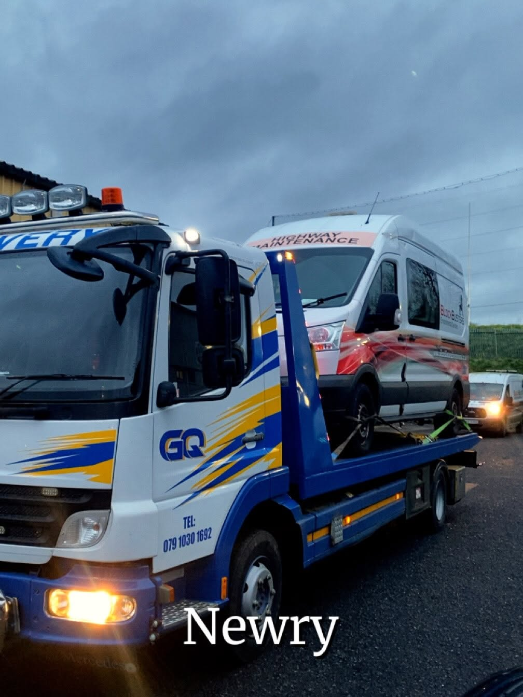

Professional, reliable and fully equipped recovery service for cars, vans and light commercial vehicles across Newry and surrounding areas.

GQ Recovery provides dependable vehicle recovery and transportation services based in the Newry area.
Whether your vehicle has broken down, needs collected, delivered to a garage, transported to a dealership, or moved safely across Northern Ireland, we are ready to help.
We handle every vehicle with care, using professional recovery equipment and secure transport methods.
Fast, safe and professional vehicle movement.
Recovery for broken down, non-running or damaged vehicles.
Safe transport for cars, vans and light commercial vehicles.
Help when your vehicle lets you down on the road.
Professional vehicle movement for garages, dealerships and customers.
Call GQ Recovery now for recovery and transport in the Newry area.
Vehicle recovery and transportation across Newry and surrounding areas.



Fast response throughout Newry and surrounding areas.
Based in Newry and covering surrounding areas.
Newry, Northern Ireland and surrounding areas.